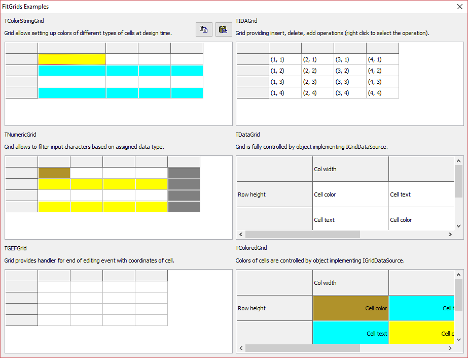

A small set of TStringGrid descendants for Delphi and Lazarus,
each adding one thing: clipboard support, an edit-finished event, row and column
editing, a data-source binding, design-time cell colours, and numeric input
validation.
They were written for Fit and are used by MotifMASTER as well.
Licence
MPL-2.0 — see LICENSE. The Mozilla Public License is file-level: a program of any licence, free or commercial, may use these components, and changes to their own files stay under MPL-2.0 with their source available.
The components
| Component | What it does | State |
|---|---|---|
TClipboardGrid | Copying and pasting through the clipboard. | Implemented |
TGEFGrid | Watches for exit from cell editing and raises TGridEditingFinished. | Implemented |
TIDAGrid | Inserting, deleting and adding rows and columns — Insert, Delete, Add. | Implemented |
TDataGrid | Binds the grid to a data-source object through IGridDataSource, so the grid exchanges values with a class instead of holding them. | Implemented |
TColoredGrid | Cell colours by cell type, set at design time. | Implemented |
TColorStringGrid | The same, on the string-grid branch. | Implemented |
TNumericGrid | Validates numeric input. | Implemented |
TIconicGrid | An icon beside the text in a cell, from a per-cell image list. | Planned declared, body empty |
TAnimatedGrid | Animating those icons. | Planned declared, body empty |
The last two are declared in NumericGrid.pas and marked “not implemented yet”: the classes exist and compile, and do nothing beyond what they inherit. They are listed because a name that resolves but does nothing is worse to discover from the code than from a table.
Class diagram
classDiagram
direction LR
class TStringGrid["TStringGrid"]
<<external>> TStringGrid
class IGridDataSource["IGridDataSource"]
<<interface>> IGridDataSource
class TAnimatedGrid["TAnimatedGrid"]
class TClipboardGrid["TClipboardGrid"]
class TColorStringGrid["TColorStringGrid"]
class TColoredGrid["TColoredGrid"]
class TDataGrid["TDataGrid"]
class TGEFGrid["TGEFGrid"]
class TIDAGrid["TIDAGrid"]
class TIconicGrid["TIconicGrid"]
class TNumericGrid["TNumericGrid"]
TIconicGrid <|-- TAnimatedGrid
TStringGrid <|-- TClipboardGrid
TClipboardGrid <|-- TColorStringGrid
TDataGrid <|-- TColoredGrid
TIDAGrid <|-- TDataGrid
TClipboardGrid <|-- TGEFGrid
TGEFGrid <|-- TIDAGrid
TNumericGrid <|-- TIconicGrid
TColorStringGrid <|-- TNumericGrid
9 classes and 1 interface are declared in package/, read from the units themselves rather than from a diagram kept by hand.
Demo application
The example project in examples/ puts every grid in one window.

Using it
The package is package/FitGrids.lpk for Lazarus and
package/FitGrids.dpk for Delphi. Open it in the IDE and compile;
there are no dependencies beyond the LCL or the VCL. Then drop a grid on a form
like any other component.